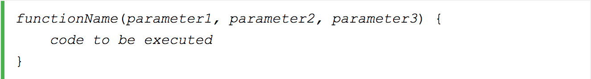

A JavaScript function is a block of code designed to perform a particular task.
A JavaScript function is executed when "something" invokes it (calls it).
This example calls a function which performs a calculation, and returns the result:
This example calls a function which performs a calculation and returns the result:
This example calls a function to convert from Fahrenheit to Celsius:
Functions can be used the same way as you use variables, in all types of formulas, assignments, and calculations.
A JavaScript function can also be defined using an expression.
A function expression can be stored in a variable:
Note : After a function expression has been stored in a variable, the variable can be used as a function:
Functions can also be defined with a built-in JavaScript function constructor called Function().
Note : Most of the time, you can avoid using the new keyword in JavaScript.
Hoisting is JavaScript's default behavior of moving declarations to the top of the current scope.
Hoisting applies to variable declarations and to function declarations. Because of this, JavaScript functions can be called before they are declared:
Function expressions can be made "self-invoking".
A self-invoking expression is invoked (started) automatically, without being called.
Function expressions will execute automatically if the expression is followed by ().
You cannot self-invoke a function declaration.
JavaScript functions can be used as values:
Functions can be used in expressions.
The typeof operator in JavaScript returns "function" for functions.
But, JavaScript functions can best be described as objects.
JavaScript functions have both properties and methods.
The toString() method returns the function as a string:
A JavaScript function does not perform any checking on parameter values (arguments).

Function parameters are the names listed in the function definition.
Function arguments are the real values passed to (and received by) the function.
JavaScript function definitions do not specify data types for parameters.
JavaScript functions do not perform type checking on the passed arguments.
JavaScript functions do not check the number of arguments received.
If a function is called with missing arguments (less than declared), the missing values are set to: undefined
JavaScript functions have a built-in object called the arguments object.
The argument object contains an array of the arguments used when the function was called (invoked).
The code inside a function is not executed when the function is defined.
The code inside a function is executed when the function is invoked.
It is common to use the term "call a function" instead of "invoke a function".
It is also common to say "call upon a function", "start a function", or "execute a function".
In this tutorial, we will use invoke, because a JavaScript function can be invoked without being called.
In JavaScript you can define functions as object methods.
If a function invocation is preceded with the new keyword, it is a constructor invocation.
With the call( ) method, you can write a method that can be used on different objects.
In JavaScript all functions are object methods.
If a function is not a method of a JavaScript object, it is a function of the global object (see previous chapter).
The call() method is a predefined JavaScript method.
It can be used to invoke (call) a method with an owner object as an argument (parameter).
The call() method can accept arguments: